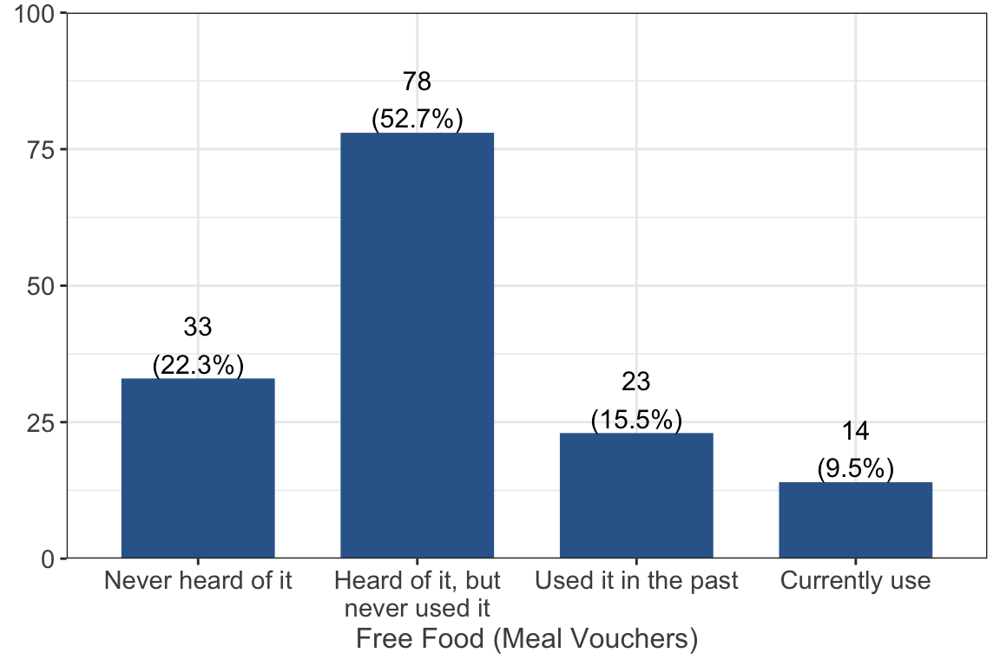

Participation in Basic Needs Programs and Services
Participation in Programs ⭐
CalFresh(also known as Food Stamps or SNAP benefits)

50.0% (n = 74) of respondents reported that they currently CalFresh and 17.6% (n = 26) have used it in the past. 31.1% (n = 46) reported they have heard of CalFresh but have never used it and 1.4% (n = 2) have never heard of it.
Women, Infant and Children (WIC) nutrition program

Only 2.7% (n = 4) of respondents reported they currently use the WIC nutrition program, 6.8% (n = 10) of respondents reported they have used it in the past, and 17.0% (n = 25) reported they have never heard of it. The majority (n = 108 73.5%) reported that they have heard of it but never have used it.
CalWORKS (also known as Cash Aid or Welfare)

Only 0.7% (n = 1) of respondents reported they currently use CalWORKS, 6.8% (n = 10) of respondents reported they have used it in the past, and 7.4% (n = 11) reported they have never heard of it. The majority (n = 126 85.1%) reported that they have heard of it but never have used it.
Emergency food from food bank, food pantry, or church

28.4% (n = 42) of respondents reported that they currently use emergency food from the food bank, food pantry, or church, 28.4% (n = 42) reported they have used emergency food in the past, and 3.4% (n = 5) reported they never heard of it. The majority (n = 59 39.9%) reported they have heard of it but never used it.
Free food from other community organization (meal vouchers, bag of groceries, gleaned produce, etc.)

9.5% (n = 14) of respondents reported that they currently get free food from other community organizations such as meal vouchers, 15.5% (n = 23) reported they have used it in the past, and 22.3% (n = 33) reported they have never heard of it. The majority (n = 78 52.7%) reported that they have heard of it but have never used it.
Free or reduced lunch meals at district schools for my children and/or dependents

6.8% (n = 10) of respondents reported that they currently have free or reduced lunch meals at district schools for theit children or dependents, 45.3% (n = 67) reported that they have in the past, and 37.2% (n = 55) reported they have heard of it but have never used it. Only 10.8% (n = 16) reported they have never heard of it.
Check all statements below that apply to you while you receive or received CalFresh benefits ⭐
I am/was able to work or worked fewer hours each week in a PAID position.

29.0% (n = 29) of respondents agreed that they are/were able to work fewer hours in a paid position when they received CalFresh benefits and 17.0% (n = 17) disagreed with the statement. 25.0% (n = 25)
I have/had more time to do an UNPAID internship or volunteer work.

20.0